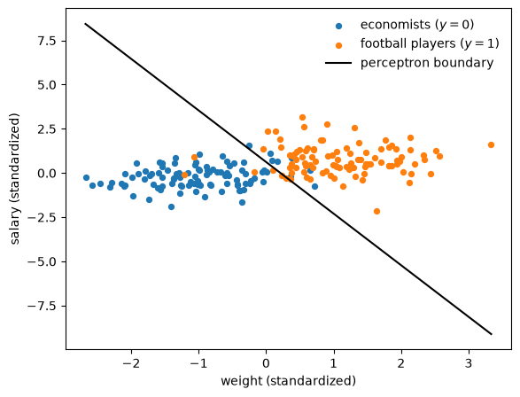
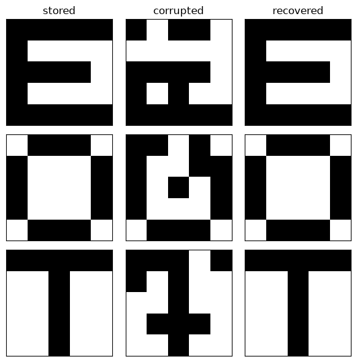
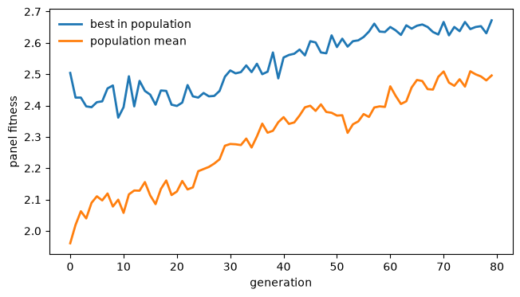
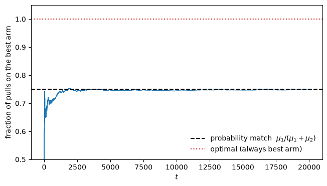

91. 遗传算法与分类器系统#
91.1. 概览#
到目前为止的讲座给适应性主体赋予了相当计量经济学化的大脑。
在 世代交叠货币经济中的适应性主体 和 Learning, Approximation, and Equilibrium Computation（英文版）中，它们运行递归最小二乘法；在 汇率不确定性、学习与实验 中，它们针对实现效用采取了牛顿步骤。
在每种情况下，主体都持有一个参数化规则并调整其系数。
本讲座考察一套不同的工具箱，即 Sargent [1993] 从约翰·霍兰德（John Holland）关于人工智能的研究以及神经网络的连接主义文献中汲取的工具箱。
这些装置并不调整固定规则的系数。
它们从经验中发现规则本身，从一个庞大的可能性空间中挖掘出来。
萨金特的论述框架是，有限理性研究纲领要求我们让模型中充满”表现得像计量经济学家”的主体，而人工智能文献则是这些主体候选大脑的目录：
正是从这些文献所积累的方法储备中，我们将挑选出赋予有限理性主体的”大脑”。
我们将巡览其中四种：
感知机（perceptron），最简单的神经网络，它其实是一个线性判别函数，与”主体作为计量经济学家”这一解读直接相关；
霍普菲尔德网络（Hopfield network），一种联想记忆机制，通过在能量函数上向下滚动，从受损输入中恢复存储的模式；
遗传算法（genetic algorithm），霍兰德基于种群的搜索方法，我们将其应用于阿克塞尔罗德的重复囚徒困境博弈，观察其发现合作行为；
分类器系统（classifier system），霍兰德提出的”大脑即竞争性经济体”的if-then规则集合，其最简单的实例——一个双臂老虎机——已经暴露出一个微妙的局限性。
我们以演化编程（evolutionary programming）作为结尾：即一个适应性主体种群，在缓慢趋向均衡的过程中，可被用来计算我们无法直接求解的均衡。
这正是 人工智能主体中作为交换媒介的货币 完整实现的思路，因此本讲座是构建下一讲的机制基础。
让我们从一些导入开始。
import numpy as np
import matplotlib.pyplot as plt
91.2. 感知机：作为判别函数的主体#
最简单的神经网络是单个感知机：\(k\) 个输入 \(x_i\)、权重 \(w_i\)，以及一个输出
其中 \(S\) 是一个将 \(\mathbb{R}\) 映射到 \([0, 1]\) 的”压缩函数”：可以是阶跃函数，也可以是S型函数 \(S(z) = 1/(1 + e^{-z})\)，或任何累积分布函数。
对于固定的权重，感知机是一个分类器：当 \(w^\top x > 0\) 时它被激活（\(y = 1\)），否则保持静默，因此边界 \(w^\top x = 0\) 是一个分隔两个类别的超平面。
训练感知机——选择 \(w\) 以最小化 \(\sum_t (y_t - S(w^\top x_t))^2\)——是一个非线性最小二乘问题，通过我们熟悉的随机梯度递归求解：
这与之前几讲学习模型中运行的 \(1/t\) 型更新方式相同。
以书中的例子为例：根据两个标准化特征区分足球运动员和经济学家。
rng = np.random.default_rng(0)
n = 100
economists = rng.multivariate_normal([-1.0, -0.3], [[0.5, 0.1], [0.1, 0.5]], n)
players = rng.multivariate_normal([1.2, 0.8], [[0.6, 0.0], [0.0, 0.6]], n)
X = np.vstack([economists, players])
y = np.r_[np.zeros(n), np.ones(n)]
X_aug = np.column_stack([np.ones(len(X)), X]) # prepend an intercept
def sigmoid(z):
return 1 / (1 + np.exp(-z))
w = np.zeros(3)
for _ in range(200): # train by stochastic gradient
for t in rng.permutation(len(X)):
w += 0.1 * (y[t] - sigmoid(X_aug[t] @ w)) * X_aug[t]
print(f"training accuracy: {np.mean((sigmoid(X_aug @ w) > 0.5) == y):.3f}")
training accuracy: 0.930
Sargent [1993] 强调的要点是，这对计量经济学家来说并非什么异类事物：感知机的决策边界本质上是一个线性判别函数。
将感知机的边界法向量与费舍尔线性判别方向进行比较。
m0, m1 = X[y == 0].mean(0), X[y == 1].mean(0)
S_within = np.cov(X[y == 0].T) * n + np.cov(X[y == 1].T) * n
lda_direction = np.linalg.solve(S_within, m1 - m0)
lda_direction /= np.linalg.norm(lda_direction)
perceptron_direction = w[1:] / np.linalg.norm(w[1:])
print(f"perceptron boundary normal : {perceptron_direction.round(3)}")
print(f"Fisher discriminant direction: {lda_direction.round(3)}")
print(f"cosine similarity: {abs(perceptron_direction @ lda_direction):.4f}")
perceptron boundary normal : [0.946 0.324]
Fisher discriminant direction: [0.925 0.38 ]
cosine similarity: 0.9982
fig, ax = plt.subplots(figsize=(6.5, 5))
ax.scatter(*economists.T, s=18, c='C0', label="economists ($y=0$)")
ax.scatter(*players.T, s=18, c='C1', label="football players ($y=1$)")
xs = np.linspace(X[:, 0].min(), X[:, 0].max(), 2)
ax.plot(xs, -(w[0] + w[1]*xs) / w[2], 'k-', lw=1.5, label="perceptron boundary")
ax.set_xlabel("weight (standardized)")
ax.set_ylabel("salary (standardized)")
ax.legend(frameon=False)
plt.show()

图 91.1 Perceptron boundary separating the two groups#
这两个方向几乎完全一致。
明斯基和帕佩特著名的批评 [Minsky and Papert, 1969] 恰恰指出，单个感知机只能表示线性判别函数，因此无法分离一条直线无法分开的类别。
该领域的复兴源于人们认识到，分层感知机——将其输出馈送到进一步的感知机中——可以逼近任意非线性判别函数，这正是 人工神经网络简介 所讨论的主题。
就我们的目的而言，感知机是这个目录中与前几讲已经做过的事情最接近的条目：一个参数化规则，通过梯度下降训练，计量经济学家一眼就能认出来。
其余三种大脑则更为陌生。
91.3. 联想记忆：霍普菲尔德网络#
第二种装置存储模式并从受损碎片中回忆它们。
将一个模式表示为长度为 \(N\) 的 \(\pm 1\) 向量。
我们希望存储 \(p\) 个模式 \(\sigma^1, \ldots, \sigma^p\)，使每个模式都是某个动态系统的不动点，从而输入一个受损版本能迅速收敛到最近的存储模式。
霍普菲尔德网络（Hopfield network）通过以下动态实现这一点：
以及一个由模式本身构建的权重矩阵。
当模式正交时，赫布规则（Hebb’s rule）\(w = \tfrac{1}{N}\sigma\sigma^\top\) 就足够了；对于仅仅线性独立（相关的）模式，则使用投影规则 \(w = \tfrac{1}{N}\sigma V^{-1}\sigma^\top\)，其中 \(V = \tfrac{1}{N}\sigma^\top \sigma\)。
两者都能使每个存储的模式成为精确的不动点。
我们在 \(5\times5\) 像素网格上存储五个字母，由于字母共享许多像素，它们是相关的，因此投影规则才是正确的选择。
PATTERNS = {
'A': ["01110", "10001", "11111", "10001", "10001"],
'E': ["11111", "10000", "11110", "10000", "11111"],
'I': ["11111", "00100", "00100", "00100", "11111"],
'O': ["01110", "10001", "10001", "10001", "01110"],
'T': ["11111", "00100", "00100", "00100", "00100"],
}
def to_vector(rows):
return np.array([1 if c == '1' else -1 for r in rows for c in r])
letters = list(PATTERNS)
σ = np.array([to_vector(PATTERNS[c]) for c in letters]) # (p, N)
def projection_rule(patterns):
"Weight matrix making each (correlated) pattern an exact fixed point."
N = patterns.shape[1]
Σ = patterns.T # (N, p)
V = Σ.T @ Σ / N
return Σ @ np.linalg.inv(V) @ Σ.T / N
def energy(w, s):
"Hopfield energy; stored patterns are local minima."
return -0.5 * s @ w @ s
def recall(w, s0, max_iter=30):
"Iterate sgn(w s) to a fixed point."
s = s0.copy()
for _ in range(max_iter):
s_new = np.sign(w @ s)
s_new[s_new == 0] = 1
if np.array_equal(s_new, s):
break
s = s_new
return s
w_hop = projection_rule(σ)
fixed = all(np.array_equal(np.sign(w_hop @ σ[i]), σ[i]) for i in range(len(letters)))
print(f"all stored letters are fixed points: {fixed}")
print(f"energy of each stored letter: {[round(energy(w_hop, σ[i]), 1) for i in range(len(letters))]}")
all stored letters are fixed points: True
energy of each stored letter: [np.float64(-12.5), np.float64(-12.5), np.float64(-12.5), np.float64(-12.5), np.float64(-12.5)]
每个存储的字母都处于相同的能量 \(-N/2\) 处，且都是不动点。
现在破坏几个像素，让网络回落到最近的记忆。
rng = np.random.default_rng(3)
show = ['E', 'O', 'T']
fig, axes = plt.subplots(len(show), 3, figsize=(6, 6))
for row, letter in enumerate(show):
i = letters.index(letter)
corrupt = σ[i].copy()
corrupt[rng.choice(25, 4, replace=False)] *= -1 # flip 4 pixels
recovered = recall(w_hop, corrupt)
for col, (img, title) in enumerate([(σ[i], "stored"),
(corrupt, "corrupted"),
(recovered, "recovered")]):
axes[row, col].imshow(img.reshape(5, 5), cmap='binary', vmin=-1, vmax=1)
axes[row, col].set_xticks([])
axes[row, col].set_yticks([])
if row == 0:
axes[row, col].set_title(title)
plt.tight_layout()
plt.show()

图 91.2 Hopfield recall of letters from corrupted inputs#
受损的字母恢复到了它们的原始状态。
恢复的可靠程度取决于损坏了多少内容以及模式之间的相关程度。
一个受损的字母偶尔会落入另一个字母的吸引域，或落入设计者从未存储过的虚假混合状态中。
for n_flip in (3, 5, 7):
correct = 0
for i in range(len(letters)):
for _ in range(40):
corrupt = σ[i].copy()
corrupt[rng.choice(25, n_flip, replace=False)] *= -1
if np.array_equal(recall(w_hop, corrupt), σ[i]):
correct += 1
print(f"{n_flip} pixels flipped: recovered exactly {correct}/{len(letters)*40}")
3 pixels flipped: recovered exactly 179/200
5 pixels flipped: recovered exactly 138/200
7 pixels flipped: recovered exactly 77/200
这个机制值得点名，因为它在整个研究方案中反复出现。
回忆是在能量函数上的下降，其局部最小值就是存储的模式。
输入一个受损的模式会将系统置于能量表面上靠近正确最小值的位置，而动态过程会将其滚动下降。
这正是模拟退火（simulated annealing）背后的几何原理，书中提到这一方法用于逃离不需要的局部最小值：加入一定量可控的随机”扰动”，一开始较大，随时间递减，从而使系统能够跳出浅层虚假吸引域，最终落入一个深层吸引域。
这是牛顿法的随机对应版本，它在分类器系统的”遗传”实验中再次出现。
91.4. 遗传算法#
第三种大脑根本不在光滑表面上下降。
霍兰德的遗传算法（genetic algorithm）通过演化一个编码为二进制字符串的候选解种群（population），在缺乏牛顿法所需光滑性的”崎岖景观”中进行搜索。
给定一个待最大化的适应度函数 \(f\) 以及一个由 \(N\) 个长度为 \(S\) 的字符串组成的种群，每一代应用四个算子：
评估：计算每个字符串的适应度 \(f(x_i)\)。
繁殖：以与适应度成正比的概率将字符串复制到下一代（“有偏轮盘赌”）。
交叉：将字符串配对，并在随机切割点交换它们的尾部，形成重组了父代片段的子代。
变异：以较小的概率 \(p_m\) 独立地翻转每个位。
繁殖将种群集中于已经奏效的方案；交叉和变异注入新的候选方案。
交叉是主力算子：它”保留了遗传结构的长片段”——霍兰德所称的模式（schemata）——同时仍进行探索，前提是种群足够多样化以供重组。
关键的是，个体字符串本身不学习：每个只存活一代便消亡。
只有社会，即种群的序列，才在学习。
这使得遗传算法作为单个大脑的模型显得别扭，而更适合作为种群或市场的模型——这一点在我们讨论到 人工智能主体中作为交换媒介的货币 时至关重要。
91.4.1. 阿克塞尔罗德的重复囚徒困境#
Axelrod [1987] 使用遗传算法演化重复囚徒困境（iterated prisoner’s dilemma）博弈的策略，该博弈的循环赛著名地由针锋相对（tit-for-tat）策略获胜。
两个玩家各自选择合作（Cooperate）或背叛（Defect）；收益结构奖励对合作者的背叛，但惩罚双方互相背叛。
# 1 = Cooperate, 0 = Defect; T > R > P > S is the prisoner's dilemma ranking
T_pay, R_pay, P_pay, S_pay = 5, 3, 1, 0
def payoff(a, b):
"My payoff when I play a against opponent's b."
if a and b: return R_pay # both cooperate
if not a and not b: return P_pay # both defect
if not a and b: return T_pay # I defect, they cooperate
return S_pay # I cooperate, they defect
按照阿克塞尔罗德的方法，策略是一个70位字符串：一个策略基于最后三轮的结果作出条件反应。
每轮都是四种结果之一（我的行动、对手的行动），因此三轮会产生 \(4^3 = 64\) 种可能的历史，64位指定了每种历史下的行动。
剩余的6位编码了一个假定的博弈前历史，以启动最初的行动。
def play(gene, opponent, n_rounds=150):
"Play a 70-bit genetic strategy against an opponent; return average payoffs."
action, premise = gene[:64], gene[64:]
hist = list(premise) # last 3 rounds as [my, opp] pairs
my_moves, opp_moves = [], []
my_total = opp_total = 0
for t in range(n_rounds):
idx = 0
for bit in hist:
idx = (idx << 1) | bit # 6 history bits -> index 0..63
a = action[idx] # my move from the lookup table
b = opponent(my_moves, opp_moves, t)
my_total += payoff(a, b)
opp_total += payoff(b, a)
my_moves.append(a)
opp_moves.append(b)
hist = [a, b] + hist[:4] # roll the 3-round window
return my_total / n_rounds, opp_total / n_rounds
该策略经过培育以便在固定的对手小组中表现出色。
每个小组成员都是历史就该成员所见的函数：其第一个参数是对手所打的历史，第二个参数是自己所打的历史。
panel_rng = np.random.default_rng(2024)
def all_cooperate(opp_moves, own_moves, t): return 1
def all_defect(opp_moves, own_moves, t): return 0
def tit_for_tat(opp_moves, own_moves, t): return 1 if t == 0 else opp_moves[-1]
def grudger(opp_moves, own_moves, t): return 0 if 0 in opp_moves else 1
def random_play(opp_moves, own_moves, t): return int(panel_rng.random() < 0.5)
PANEL = {'AllC': all_cooperate, 'AllD': all_defect, 'TFT': tit_for_tat,
'Grudger': grudger, 'Random': random_play}
def fitness(gene):
"Average payoff against the whole panel."
return np.mean([play(gene, opp)[0] for opp in PANEL.values()])
针锋相对策略复制其对手最后一次的行动，而”记仇者”（grudger）一旦对手曾经背叛过一次，便永远背叛下去。
现在开始演化。
def evolve(N=60, generations=80, p_mut=0.01, seed=0):
rng = np.random.default_rng(seed)
pop = rng.integers(0, 2, (N, 70))
best_hist, mean_hist = [], []
for _ in range(generations):
fit = np.array([fitness(pop[i]) for i in range(N)])
best_hist.append(fit.max())
mean_hist.append(fit.mean())
weight = fit - fit.min() + 1e-6 # shift positive for roulette
nxt = np.empty_like(pop)
for k in range(0, N, 2):
i, j = np.searchsorted(np.cumsum(weight), rng.random(2) * weight.sum())
cut = rng.integers(1, 70) # single-point crossover
c1 = np.concatenate([pop[i, :cut], pop[j, cut:]])
c2 = np.concatenate([pop[j, :cut], pop[i, cut:]])
for c in (c1, c2):
c[rng.random(70) < p_mut] ^= 1 # mutation
nxt[k], nxt[k+1] = c1, c2
pop = nxt
fit = np.array([fitness(pop[i]) for i in range(N)])
return pop[fit.argmax()], np.array(best_hist), np.array(mean_hist)
panel_rng = np.random.default_rng(0) # reset the panel's randomizer
champion, best_hist, mean_hist = evolve()
print(f"generation 0: best fitness {best_hist[0]:.3f}")
print(f"generation {len(best_hist)-1}: best fitness {best_hist[-1]:.3f}")
generation 0: best fitness 2.504
generation 79: best fitness 2.672
fig, ax = plt.subplots(figsize=(7.5, 4))
ax.plot(best_hist, label="best in population", lw=2)
ax.plot(mean_hist, label="population mean", lw=2)
ax.set_xlabel("generation")
ax.set_ylabel("panel fitness")
ax.legend(frameon=False)
plt.show()

图 91.3 Population fitness across generations#
适应度攀升，然后保持稳定。
演化究竟发现了什么样的策略？
print("evolved champion's average payoff against each opponent:")
for name, opp in PANEL.items():
me, them = play(champion, opp)
print(f" vs {name:8s}: me = {me:.2f}, opponent = {them:.2f}")
evolved champion's average payoff against each opponent:
vs AllC : me = 5.00, opponent = 0.00
vs AllD : me = 1.00, opponent = 1.00
vs TFT : me = 2.98, opponent = 2.98
vs Grudger : me = 1.01, opponent = 1.07
vs Random : me = 2.80, opponent = 1.33
用阿克塞尔罗德的话说，演化得到的策略是友善且报复性的。
它与友善的对手（AllC、TFT、Grudger）达成互相合作，拒绝被AllD（全背叛者）欺骗（沦为接近惩罚收益的相互背叛），并且利用了Random（随机策略）。
没有人告诉它要合作；合作行为之所以出现，是因为在包含合作者的小组中，合作是有利可图的。
而且，它在同一小组面前的表现甚至比针锋相对策略本身还要好。
def play_function(strategy, opponent, n=150):
"Average payoff of a stateful strategy function against an opponent."
mine, theirs, total = [], [], 0
for t in range(n):
# each side is passed its opponent's history first, then its own
a, b = strategy(theirs, mine, t), opponent(mine, theirs, t)
total += payoff(a, b)
mine.append(a)
theirs.append(b)
return total / n
panel_rng = np.random.default_rng(0)
tft_fitness = np.mean([play_function(tit_for_tat, opp) for opp in PANEL.values()])
print(f"tit-for-tat's own panel fitness: {tft_fitness:.3f}")
print(f"evolved champion's panel fitness: {best_hist[-1]:.3f}")
tit-for-tat's own panel fitness: 2.432
evolved champion's panel fitness: 2.672
这重现了阿克塞尔罗德的核心发现：遗传算法”产生了一个能够赢得该锦标赛的策略，尤其是能够胜过赢得该锦标赛的’针锋相对’策略”。
它在对付合作者时的表现与针锋相对策略非常相似，但其额外的记忆能力使它能从针锋相对策略放过的可利用对手身上榨取更多收益。
差距并不大，也不应该大。
针锋相对策略在这个对手小组面前是一个强有力的策略；额外的记忆所能带来的，是针对那些针锋相对策略能应对但并非最优应对的对手所获得的适度优势。
91.5. 分类器系统#
遗传算法演化的是一个其中没有个体学习的种群。
霍兰德的分类器系统（classifier system）将同样的演化机制置于单个主体内部，作为单一大脑的模型。
萨金特将其描述为霍兰德关于心智作为竞争性经济体（competitive economy）的构想：
各条语句相互竞争决策的机会。分类器系统以霍兰德称之为竞争性经济体的方式，将遗传算法的要素与其他方面结合起来代表一个大脑。
分类器系统包括：
分类器（classifiers），即以三元字母表 \(\{0, 1, \#\}\) 编码的if-then规则，其条件部分与状态匹配，动作部分规定一个行动，其中 \(\#\) 是通配符（“我不在乎”），使得通用规则能够与特定规则共存。
解码器（decoder），给定当前状态，找出哪些分类器的条件是匹配的。
拍卖（auction），选择一个匹配的分类器来执行行动：可以是最强的一个，或以与强度成比例的概率选出的一个。
计账系统（accounting system），更新每个分类器的强度（strength）——即其决策所赚取的净奖励的移动平均值——并在序贯问题中，将奖励从获得报酬的规则反向传递给设立这些规则的规则。
遗传算子（genetic operators），创造新的分类器，进行泛化（添加 \(\#\)）和特化（移除 \(\#\)），从而使系统的词汇本身也在演化。
91.5.1. 双臂老虎机#
由布莱恩·亚瑟（Brian Arthur）和卡尔·西蒙（Carl Simon）提出的最简单的分类器系统，玩的是一个双臂老虎机（two-armed bandit）。
臂 \(i\) 支付一个均值为 \(\mu_i\) 的随机奖励，且 \(\mu_1 > \mu_2\)，但玩家对任何一个分布都一无所知。
该分类器系统持有两条规则——“拉动臂1”和”拉动臂2”——它们的条件总是被满足。
每条规则的强度是该臂所提供收益的移动平均值，选择拉动哪个臂的概率与强度成正比。
这两条规则一开始拥有相等的强度：系统对任何一个臂都一无所知，必须从其所经历的奖励中建立自己的估计。
def two_armed_bandit(μ, σ=0.5, T=20_000, seed=0):
"Strength = running average of an arm's payoff; pull ∝ strength."
rng = np.random.default_rng(seed)
S = np.ones(2) # equal strengths: no prior knowledge
τ = np.array([1, 1]) # pull counters
pulls = np.empty(T, int)
for t in range(T):
w = np.maximum(S, 1e-9) # strengths can dip below zero early on
i = 0 if rng.random() < w[0] / w.sum() else 1
reward = μ[i] + σ * rng.standard_normal()
τ[i] += 1
S[i] += (reward - S[i]) / τ[i] # running average
pulls[t] = i
return pulls
pulls = two_armed_bandit([3.0, 1.0])
frac_best = np.cumsum(pulls == 0) / np.arange(1, len(pulls) + 1)
fig, ax = plt.subplots(figsize=(7.5, 4))
ax.plot(frac_best, lw=1)
ax.axhline(0.75, color='k', ls='--', label="probability match $\\mu_1/(\\mu_1+\\mu_2)$")
ax.axhline(1.0, color='C3', ls=':', label="optimal (always best arm)")
ax.set_xlabel("$t$")
ax.set_ylabel("fraction of pulls on the best arm")
ax.set_ylim(0.5, 1.05)
ax.legend(frameon=False)
plt.show()

图 91.4 The classifier bandit converges to probability matching#
拉动较好那个臂的比例会收敛，但不会收敛到一。
它收敛到 \(\mu_1/(\mu_1 + \mu_2)\)，即该臂占总预期奖励的份额。
for μ in ([1.0, 0.5], [2.0, 1.0], [3.0, 1.0]):
frac = np.mean(two_armed_bandit(μ)[-5000:] == 0)
print(f"μ = {μ}: fraction on best arm = {frac:.3f}, "
f"probability match = {μ[0]/(μ[0]+μ[1]):.3f} (optimal = 1.0)")
μ = [1.0, 0.5]: fraction on best arm = 0.655, probability match = 0.667 (optimal = 1.0)
μ = [2.0, 1.0]: fraction on best arm = 0.659, probability match = 0.667 (optimal = 1.0)
μ = [3.0, 1.0]: fraction on best arm = 0.750, probability match = 0.750 (optimal = 1.0)
亚瑟和西蒙证明了这一点：强度比例分类器进行概率匹配（probability-matches）。
它按照各臂预期奖励的比例来拉动，而不是专注于最好的那个，因此它永远都在把奖励留在桌面上。
这不是一个需要掩盖的错误；而是关于计账方式的一个教训。
一个分类器系统的好坏，取决于强度分配和传递的方案。
这里使用的朴素规则得到的是概率匹配；更好的规则可以做得更好。
而在序贯问题中——一条规则的收益要经过一连串中间决策，才在很久以后才实现——计账必须做一件更困难的事情：为仅仅建立起一个未来有利可图的决策的规则给予奖励。
霍兰德为此设计的装置是桶链（bucket brigade）：每个采取行动的分类器都将其部分强度支付给在它之前刚刚采取行动的那个分类器，即将系统带入当前规则得以行动的状态的那个分类器。
在一条链末端支付的奖励会向后渗透，一条规则接着一条规则，直到从未直接获得报酬的早期设立规则，也因促成了这一结果而获得了强度。
设计这种反向流动是构建分类器系统的核心技艺，也正是 人工智能主体中作为交换媒介的货币 必须做对的地方，以使主体学会今天为了明天的交易而接受货币。
91.6. 演化编程#
我们已经巡览了四种大脑。
最后一个想法关乎如何运用它们。
贯穿整个这部分内容的一个反复出现的发现是：适应性主体系统，无论多么迟缓，都倾向于收敛到理性预期均衡。
世代交叠货币经济中的适应性主体 和 Learning, Approximation, and Equilibrium Computation（英文版）展示了最小二乘学习者找到一个均衡；汇率不确定性、学习与实验 展示了牛顿学习者稳定在（众多均衡中的）一个均衡上。
演化编程（evolutionary programming）将这一倾向转化为一种工具。
如果一个适应性主体种群能够可靠地收敛到某个均衡，我们就可以将该种群作为计算该均衡的方法来运行，尤其是在模型过于复杂以至于无法手工求解的情况下。
萨金特谨慎地说明了这里正在发生和没有发生的事情：
适应性主体在”教导”经济学家，正如任何用于求解非线性方程的数值算法都在”教导”数学家一样。当这些主体能够”教导”我们某些东西时，那是因为我们设计它们如此。
这与贯穿 Learning, Approximation, and Equilibrium Computation（英文版）的对偶性相同：一个学习型经济体是一个去中心化的均衡计算过程，而一个均衡计算过程是一个中心化的学习算法。
遗传算法和分类器系统只是比递归最小二乘更丰富的计算引擎，能够搜索崎岖的景观，发现一个好规则的结构，而不仅仅是调整固定规则的系数。
其代表性应用是 Kiyotaki and Wright [1989] 的货币搜索理论模型，其中交换媒介并非被假定，而必须从主体选择如何交易的过程中涌现出来。
均衡是一组交易策略和匹配概率，而对于该模型的丰富版本，很难通过解析方法进行刻画。
Marimon et al. [1990] 将霍兰德分类器系统的种群放入该环境中，观察它们收敛到均衡，然后构建了一个没有已知解析解的五种商品版本，让分类器系统提示该均衡的样貌。
91.7. 结束语#
这份目录中的四种大脑在其所假设的既定条件上有所不同。
感知机被赋予了一个函数形式，只被要求提供其系数，这就是为什么计量经济学家一眼就能认出它。
霍普菲尔德网络被赋予了模式本身，只被要求回忆它们。
遗传算法只被赋予了一个适应度函数，必须在一个无法计算梯度的空间中进行搜索。
分类器系统被赋予了一套可以书写规则的词汇，必须发现哪些规则值得保留。
沿着这份清单往下走，我们赋予主体的东西越来越少，而要求它发现的东西越来越多，这正是有限理性研究纲领推动我们前进的方向。
在此过程中出现了两个警示，两者都会在下一讲中再次出现。
遗传算法的个体不学习：只有种群在学习，这使得它更像是一个社会的模型，而非一个心智的模型。
而老虎机的例子表明，一个分类器系统的表现是由其计账方式——即强度如何分配、竞价和传递——决定的，而不是仅仅因为拥有分类器这一事实本身。
人工智能主体中作为交换媒介的货币 将这套机制组装成从零开始学习使用货币的主体，而这两个警示都直接关系到这些主体最终能够学到什么。
91.8. 练习#
练习 91.1
霍普菲尔德网络的回忆过程是在能量 \(E(s) = -\tfrac{1}{2}s^\top ws\) 上的下降过程。
直接验证这一下降过程。
取一个存储的字母，破坏若干像素，并在回忆动态的每一步记录能量。
确认能量从不增加，并且回忆过程会停止在（或低于）存储模式的能量水平。
然后更严重地破坏模式，并对失败情况进行分类：回忆是落在一个不同的存储字母上，还是落在一个从未被存储过的虚假状态上？
比较各种情况下的能量，并用它来解释为什么会出现错误。
解答 练习 91.1
def recall_with_energy(w, s0, max_iter=30):
s = s0.copy()
trace = [energy(w, s)]
for _ in range(max_iter):
s_new = np.sign(w @ s)
s_new[s_new == 0] = 1
trace.append(energy(w, s_new))
if np.array_equal(s_new, s):
break
s = s_new
return s, trace
rng = np.random.default_rng(1)
i = letters.index('E')
corrupt = σ[i].copy()
corrupt[rng.choice(25, 5, replace=False)] *= -1
final, trace = recall_with_energy(w_hop, corrupt)
print(f"energy along the recall path: {[round(e, 2) for e in trace]}")
print(f"monotonically non-increasing: {all(np.diff(trace) <= 1e-9)}")
print(f"recovered the intended letter 'E': {np.array_equal(final, σ[i])}")
energy along the recall path: [np.float64(-6.38), np.float64(-12.5), np.float64(-12.5)]
monotonically non-increasing: True
recovered the intended letter 'E': True
能量在每一条回忆路径上都单调下降：动态过程只能向下移动，这就是为什么网络总是停止在一个局部最小值处。
现在更严重地破坏模式，并将结果分为三类：预期的字母、一个不同的存储字母，以及一个虽是不动点但从未被教授过的虚假状态。
def classify_outcome(final, i):
if np.array_equal(final, σ[i]):
return "intended"
if any(np.array_equal(final, σ[k]) for k in range(len(letters))):
return "wrong letter"
return "spurious"
counts = {"intended": 0, "wrong letter": 0, "spurious": 0}
wrong_energy, spurious_energy = [], []
for i in range(len(letters)):
for seed in range(200):
r = np.random.default_rng(1000*i + seed)
corrupt = σ[i].copy()
corrupt[r.choice(25, 7, replace=False)] *= -1
final = recall(w_hop, corrupt)
kind = classify_outcome(final, i)
counts[kind] += 1
if kind == "wrong letter":
wrong_energy.append(energy(w_hop, final))
elif kind == "spurious":
spurious_energy.append(energy(w_hop, final))
print(f"7-pixel corruptions ({sum(counts.values())} trials): {counts}")
print(f"stored patterns all have energy {energy(w_hop, σ[0]):.1f}")
print(f"wrong-letter results: energy in [{min(wrong_energy):.1f}, {max(wrong_energy):.1f}]")
print(f"spurious results: energy in [{min(spurious_energy):.1f}, {max(spurious_energy):.1f}]")
7-pixel corruptions (1000 trials): {'intended': 404, 'wrong letter': 62, 'spurious': 534}
stored patterns all have energy -12.5
wrong-letter results: energy in [-12.5, -12.5]
spurious results: energy in [-12.5, -10.4]
两种失败模式都会出现，而且在这种破坏程度下，虚假状态在数量上要更为常见一些。
一个错误字母的结果恰好处于存储的能量 \(-N/2\) 上：这种破坏将起点推过了一个盆地边界，进入了另一个同样深的存储记忆的吸引域。
能量下降会收敛到某个最小值，但当相关模式的吸引域相互交错时，无法保证收敛到最近的那个。
一个虚假的结果是设计者从未打算得到的局部最小值，通常是存储模式的混合，作为存储规则的一种副产品被创造出来。
其能量范围从比存储模式浅一些，一直到与之完全相同的深度，因此仅凭深度本身并不能判断某个记忆是否是我们所要求的那种。
一些最深的虚假状态是符号反转：因为 \(\operatorname{sgn}(w(-s)) = -\operatorname{sgn}(ws)\)，只要 \(\sigma\) 是不动点，向量 \(-\sigma\) 就以同样的能量成为不动点，因此无论我们是否希望如此，网络都会存储每个字母的”底片”版本。
由于所有这些都是真正的局部最小值，向下的动态过程无法从任何一个中逃脱。
这两点都是网络不完美的原因，也正是为什么模拟退火很重要：加入递减的随机扰动，能让系统在稳定下来之前跳出一个浅层虚假吸引域，或跨越一个盆地边界，而纯粹的能量下降永远做不到这一点。
练习 91.2
遗传算法的探索来自两个算子：交叉和变异。
书中指出，交叉”是该算法的核心”，而单独的变异”是注入多样性的一种糟糕机制”。
在阿克塞尔罗德的博弈中检验这一论断。
编写一个仅使用变异的变体（每个子代都是从一个被选中的父代经变异得到的副本，不进行交叉），并将其达到的适应度与完整算法进行比较。
书中谨慎地指出了何时单独的变异是弱势的：“当变异率设定为非常低的值时，单独的变异是一种注入多样性的糟糕机制。”
因此在低变异率下运行比较，此时交叉必须承担探索的重任。
解答 练习 91.2
def evolve_no_crossover(N=60, generations=60, p_mut=0.005, seed=0):
"Mutation-only variant: each child is a mutated copy of one selected parent."
rng = np.random.default_rng(seed)
pop = rng.integers(0, 2, (N, 70))
best_hist = []
for _ in range(generations):
fit = np.array([fitness(pop[i]) for i in range(N)])
best_hist.append(fit.max()) # recorded exactly as in `evolve`
weight = fit - fit.min() + 1e-6
parents = np.searchsorted(np.cumsum(weight), rng.random(N) * weight.sum())
nxt = pop[parents].copy()
nxt[rng.random((N, 70)) < p_mut] ^= 1
pop = nxt
return best_hist[-1]
rows = []
for seed in range(5):
panel_rng = np.random.default_rng(seed)
with_x = evolve(N=60, generations=60, p_mut=0.005, seed=seed)[1][-1]
panel_rng = np.random.default_rng(seed)
without_x = evolve_no_crossover(seed=seed)
rows.append((seed, with_x, without_x))
print(f"{'seed':>4} {'with crossover':>16} {'mutation only':>16}")
for sd, a, b in rows:
print(f"{sd:>4} {a:>16.3f} {b:>16.3f}")
print(f"{'mean':>4} {np.mean([r[1] for r in rows]):>16.3f} "
f"{np.mean([r[2] for r in rows]):>16.3f}")
seed with crossover mutation only
0 2.643 2.572
1 2.540 2.583
2 2.664 2.547
3 2.657 2.616
4 2.669 2.556
mean 2.635 2.575
在低变异率下，交叉的优势很明显：在几乎每个随机种子上，它都达到了比仅使用变异的变体更高的适应度。
原因正是书中所给出的。
在变异很少的情况下，仅使用变异的种群只能每次通过一次罕见的位翻转来缓慢前进，并且随着选择过程不断复制其少数最优字符串，多样性很快就会丧失。
而交叉则重组了整段已经在不同字符串中被证明有用的片段：将一种应对某个对手的良好方式，与应对另一个对手的良好方式拼接在一起。
它注入了大规模、结构化的变异，同时保留了适应度已经青睐的模式，这正是霍兰德将其置于该算法核心地位的原因。
备注
在较高的变异率下，这一差距会缩小，甚至可能消失：当变异本身就能产生大量多样性时，交叉的贡献就不那么关键了。
尝试用 p_mut=0.02 重新运行该比较，看看这一效应如何缩小。
交叉是否具有决定性作用，既取决于变异率，也取决于编码方式是否将有用的构建模块与连续的位段对齐——对于这个基于历史索引的策略表而言，它只做到了部分对齐。
练习 91.3
双臂老虎机分类器进行概率匹配，这是次优的：它会永远以固定的比例继续拉动较差的那个臂。
一个自然的修正方法是，随着系统信心的增强，使拍卖变得更加”贪婪”。
用一个softmax函数替代与强度成比例的选择规则：
其中 \(\beta\) 控制贪婪程度（\(\beta \to \infty\) 时总是选择更强的那个臂）。
实现它，并展示长期而言拉动最佳臂的比例如何依赖于 \(\beta\)。
\(\beta\) 需要多大，才能使分类器从概率匹配转向最优策略？
解答 练习 91.3
def bandit_softmax(μ, β, σ=0.5, T=20_000, seed=0):
rng = np.random.default_rng(seed)
S = np.ones(2) # equal strengths, as before
τ = np.array([1, 1])
pulls = np.empty(T, int)
for t in range(T):
p1 = 1 / (1 + np.exp(-β * (S[0] - S[1])))
i = 0 if rng.random() < p1 else 1
reward = μ[i] + σ * rng.standard_normal()
τ[i] += 1
S[i] += (reward - S[i]) / τ[i]
pulls[t] = i
return np.mean(pulls[-5000:] == 0)
μ = [3.0, 1.0]
print(f"probability match target = {μ[0]/(μ[0]+μ[1]):.3f}, optimal = 1.000\n")
for β in (0.5, 1.0, 2.0, 4.0, 8.0):
frac = bandit_softmax(μ, β)
print(f"β = {β:>4}: fraction on best arm = {frac:.3f}")
probability match target = 0.750, optimal = 1.000
β = 0.5: fraction on best arm = 0.732
β = 1.0: fraction on best arm = 0.888
β = 2.0: fraction on best arm = 0.980
β = 4.0: fraction on best arm = 1.000
β = 8.0: fraction on best arm = 1.000
随着 \(\beta\) 的增大，分类器摆脱了概率匹配，转而集中拉动较好的那个臂，逐渐逼近总是拉动该臂的最优策略。
这个练习具体展示了为什么计账和拍卖规则——而不仅仅是拥有分类器这一事实——决定了一个分类器系统的表现好坏。
亚瑟和西蒙的强度比例规则只是一个谱系上的一个点；贪婪规则则位于谱系的另一端。
真正的分类器系统，包括 人工智能主体中作为交换媒介的货币 中的那个系统，都是刻意选择其拍卖和强度更新规则的，正是因为这一选择才是区分一个仅仅进行概率匹配的系统与一个学会良好行动的系统的关键所在。